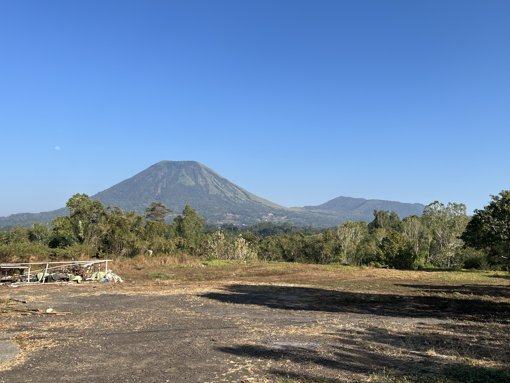

Nontje Kambey
Lurah Pertama
Periode
Lurah pertama yang menjabat di Kelurahan Kamasi Satu dan menjabat sebanyak 2 periode.
KELURAHAN KAMASI SATU TOMOHON TENGAH
Kamasi Satu adalah kelurahan di Kecamatan Tomohon Tengah, Kota Tomohon, Sulawesi Utara. Halaman ini merangkum identitas wilayah, gambaran penduduk, dan jejak sejarah yang dapat ditelusuri.
Ringkasan penduduk dan penggunaan lahan di bawah mengikuti papan profil kelurahan. Rincian yang belum tercantum akan dilengkapi setelah data tersedia.

01 / TENTANG WILAYAH
Kamasi Satu merupakan bagian dari Kecamatan Tomohon Tengah. Di tengah kehidupan perkotaan Tomohon, kelurahan ini memiliki ruang bagi cerita warga, kegiatan usaha, dan pelayanan masyarakat yang terus berkembang.
Kelurahan ini memiliki berbagai potensi lokal, mulai dari aktivitas masyarakat, usaha kecil dan menengah, hingga fasilitas sosial dan pelayanan publik yang mendukung kehidupan sehari-hari. Melalui semangat kebersamaan dan partisipasi masyarakat, Kamasi 1 terus berkembang dengan tetap menjaga nilai sosial, budaya, serta identitas lokalnya.
Lihat sumber pemerintah kota02 / STATISTIK WILAYAH
Gambaran penduduk dan penggunaan lahan berdasarkan papan profil kelurahan.
Laki-laki 53750,4%
Perempuan 52949,6%
03 / JEJAK SEJARAH
Wilayah ini bermula sebagai Kampung Baru di bawah kepemimpinan Hukum Tua Menase Kainde, yang dirintis oleh 26 kepala keluarga.
Terbentuk wilayah Lingkungan Lima seiring dengan pertumbuhan permukiman dan aktivitas warga, seperti munculnya sentra kerajinan lokal.
Pada , Kampung Baru resmi dimekarkan dari induknya dan statusnya ditingkatkan menjadi kelurahan definitif dengan nama Kamasi Satu.
Pemerintah Kota Tomohon memberitakan ibadah syukur HUT ke-10 Kelurahan Kamasi Satu pada 29 Agustus 2018. Peristiwa ini menjadi salah satu penanda sejarah kelurahan yang terdokumentasi.
Situs Pemerintah Kota Tomohon mencantumkan Kamasi Satu sebagai salah satu kelurahan di Kecamatan Tomohon Tengah.
04 / KEPEMIMPINAN
Daftar Lurah yang pernah menjabat di Kelurahan Kamasi Satu.
Lurah Pertama
Periode
Lurah pertama yang menjabat di Kelurahan Kamasi Satu dan menjabat sebanyak 2 periode.
Lurah Kedua
Periode
Lurah kedua yang menjabat di Kelurahan Kamasi Satu.
Lurah saat ini
Periode
Lurah yang menjabat sebagai kepala lurah di Kelurahan Kamasi Satu saat ini.
LANJUT JELAJAH